Stock · 12 mini maquettes · 21.11
Tes onglets et tes pièces, sur ton écran en ligne (tour 8). Un axe par section ; « Je prends » sous la version que tu retiens.
« Il y a beaucoup de choses très bien pour le stock, mais beaucoup de moins bon, déjà il y a des vues et de l'espace gâché. »
« La vue type étagère est incroyablement, mais il y a un ou deux souci, et dans autre stock, j'ai pas cette vue.. »
« Faire passer plusieurs critique et autres agent pour voir tout les problèmes. Notamment l'autre vue de modification »
Tes captures, la référence
01 : Stocks › Articles, annotée de ta main. 02 : la fiche d'un article (Cryo Hops Citra).
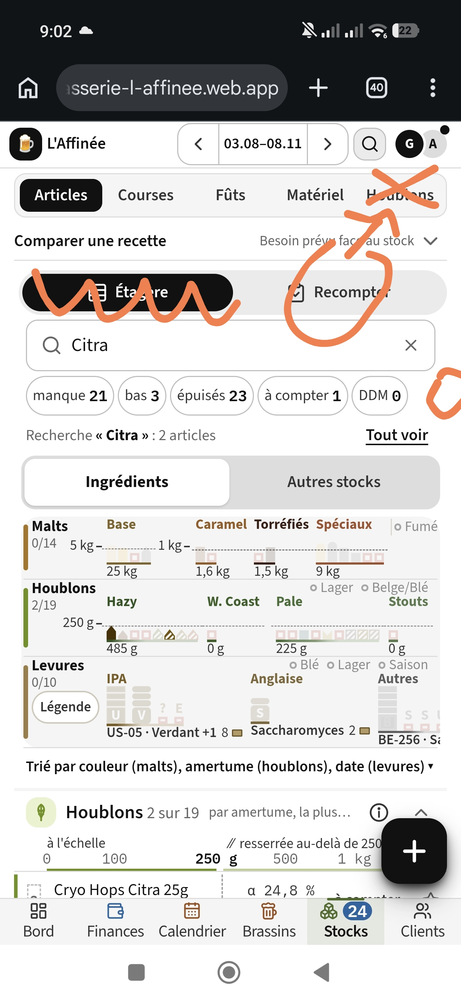
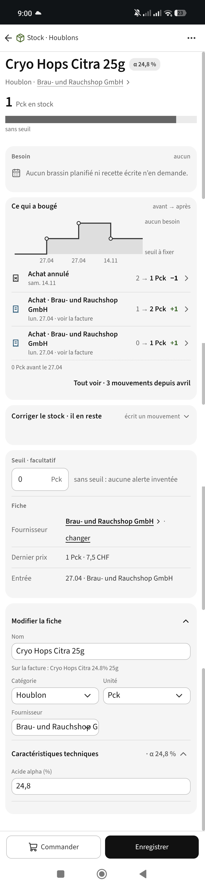
D1 · Articles et Recompter
d1aTon dessin, repris tel quel
Recompter prend la place de l'onglet Houblons barré. La bascule Étagère est retirée, le rond reste après DDM. La rangée « Comparer » est gardée telle que tu l'as laissée.
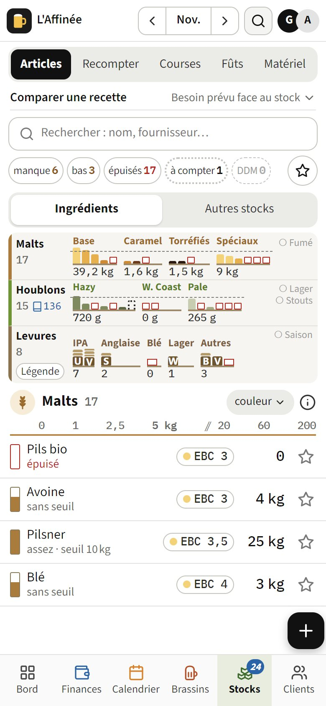
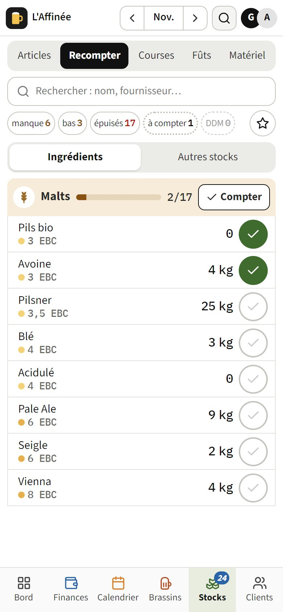
d1b écartée : Recompter dans le rond ; tu l'as dessiné en onglet.
d1c écartée : la pastille « DDM · ★ » est illisible.
D2 · Le mur et la liste dessous
d2aRayon actif pointé
Le mur garde ses noms et ses totaux. La pointe du rayon touché descend sous le nom, la liste dessous se met à son rayon. Trois articles visibles à 660 px de haut.
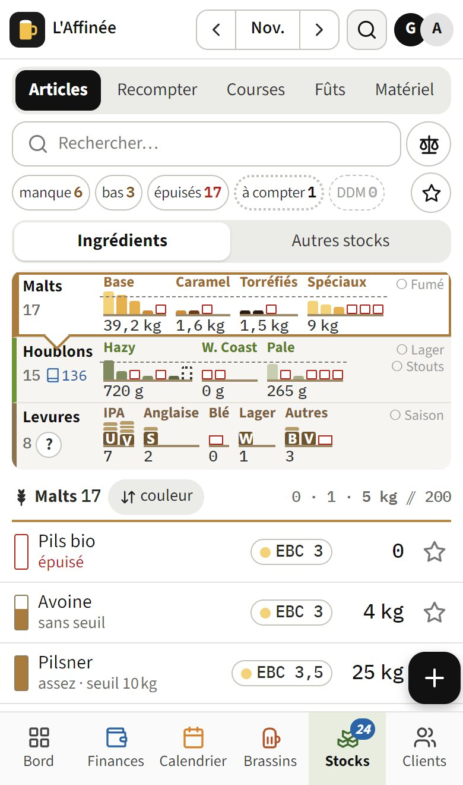
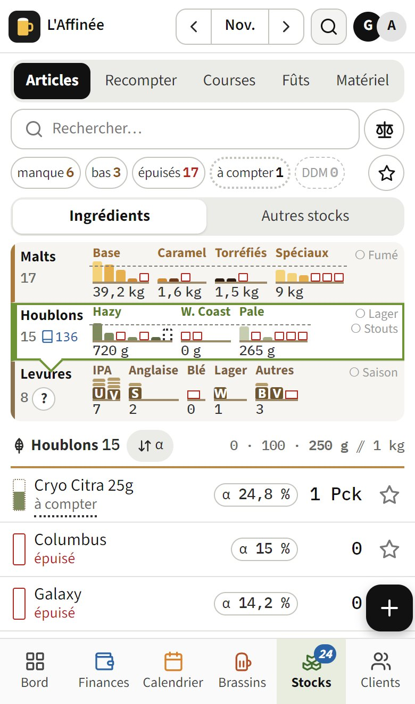
d2cAlternative : la bulle sous le mur
Toucher un pot ouvre une bulle sous le mur, dans le flux, pointée vers lui. Les Levures restent visibles. « À compter » prend l'icône de compte ; le Galaxy épuisé, un pot rouge.
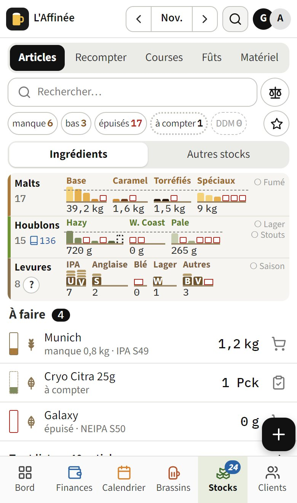
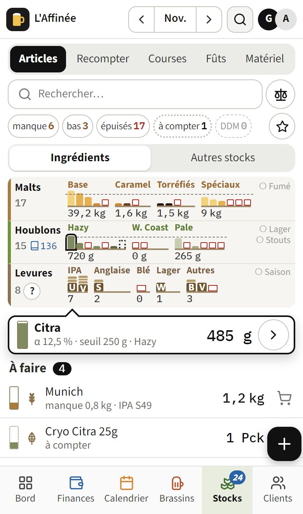
d2b écartée : le mur perd ses noms et ses totaux.
D3 · La légende
Deux sous-choix séparés : le téléphone (390) et l'écran large (1280).
d3b390 : le rond « ? »
Un rond « ? » près du compte des Levures. Touché, il ouvre une bulle sous le mur, pointée vers lui. Rien d'écrit au repos.
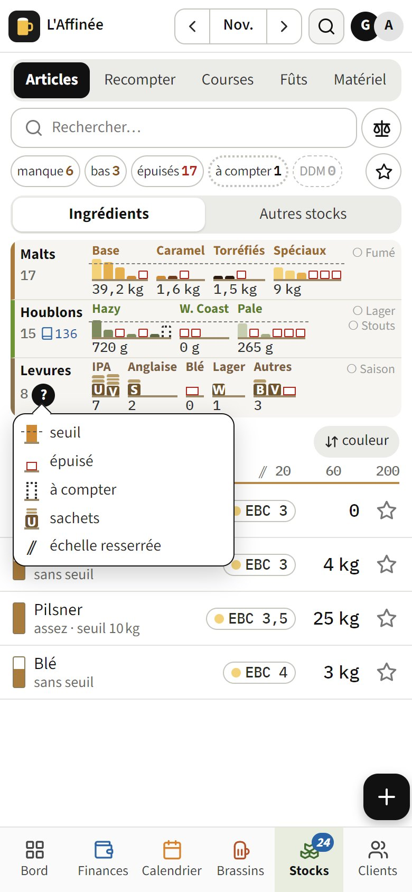
d3a1280 : le rond et les tables complètes
Le même rond « ? ». Dessous, les tables complètes : 17 malts, 15 houblons, les levures. Barres de houblon vertes, « 0 kg » écrit.
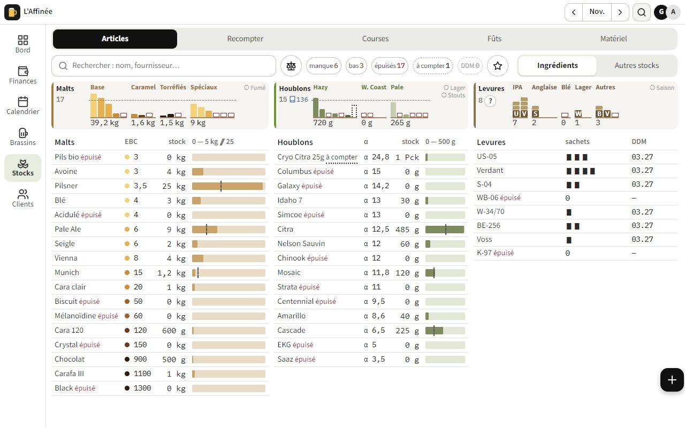
d3a à 390 écartée : la légende serait écrite au repos.
d3b à 1280 écartée : une colonne vide sous le mur.
D4 · Autres stocks
d4bL'étagère, ses pots et sa bulle
Additifs, Emballage et Nettoyage en étagère. Noms sur deux lignes, capsule à couronne dentée, caisse à cloisons. En pied : « Fûts 10 · 3 pleins · 2 à laver » et « Matériel rien à signaler ». La bulle propose Commander ou Fiche.
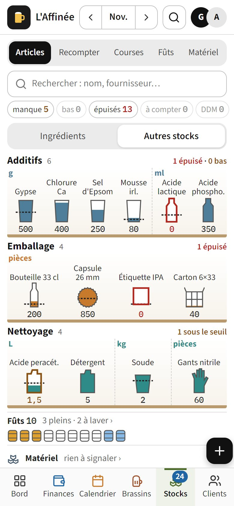
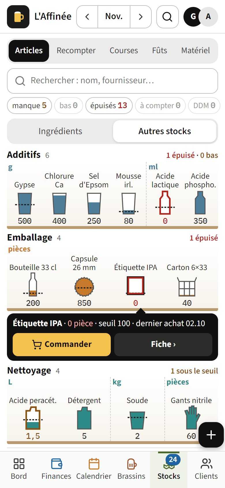
d4a écartée : barres anonymes, et le mur serait à rebâtir.
d4c écartée : le mur serait à rebâtir sur l'étagère de st1 ; la structure se revoit après ton choix de D4.
D5 · La fiche d'un article, et sa modification
d5aPastilles et boutons − +
Besoin et prix en pastilles seulement. Stock et Seuil se règlent avec − et +, « Pck = 25 g · il en reste » dans le pavé. La courbe « Ce qui a bougé » est commune. Modifier s'ouvre en feuille par-dessus la fiche.
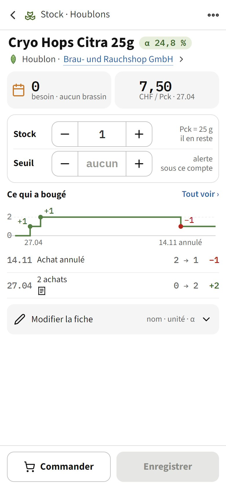
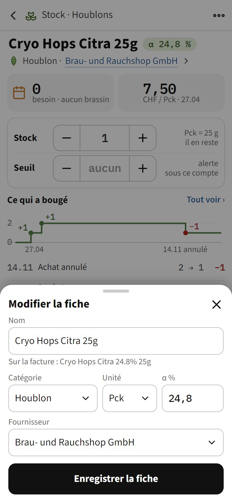
d5bAlternative : la règle graduée
Le stock se tire sur une règle, le seuil est un tiret sur le 2. « Aucun seuil » à droite ; le bouton Enregistrer écrit « +2 · seuil 2 ». Pourquoi : Compté, Perte, Autre.
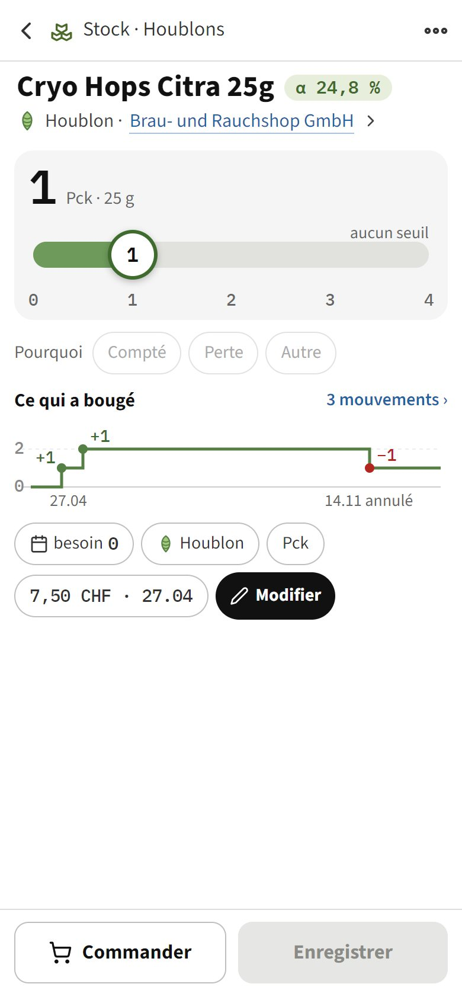
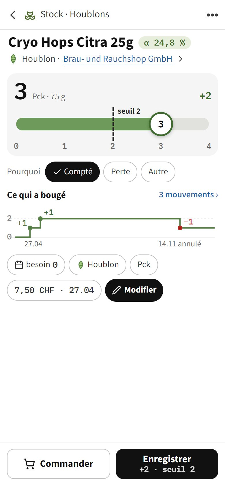
d5c écartée : ne vaut que pour les unités comptées.
D6 · Recompter, la version à tuiles
Cette Recompter est à tuiles (Malts, Houblons, Levures). Celle de d1a garde la bande de rayon et la coche ronde.
d6bPot, EBC et champ de quantité
Chaque malt montre sa pastille de couleur, son pot et son champ de quantité. Un bandeau « EBC inconnu sur 3 malts · Compléter › » signale ceux sans couleur.
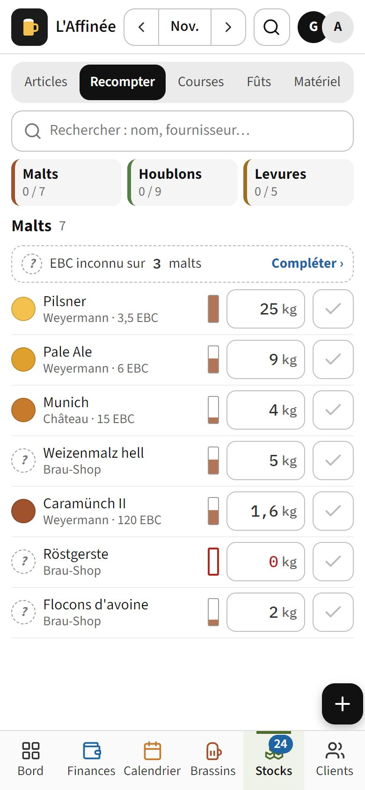
d6a écartée : l'EBC en colonne, 120 px de large.
d6c écartée : des barres avec une légende au repos.
D7 · Les sucres
d7aUn groupe « Sucres » au bout du rang Malts
Sur ton mur : couleurs EBC, sachets, tirets. Les pots de sucre, dorés à points, sont au bout du rang Malts. La liste dessous : « Malts et sucres 19 ».
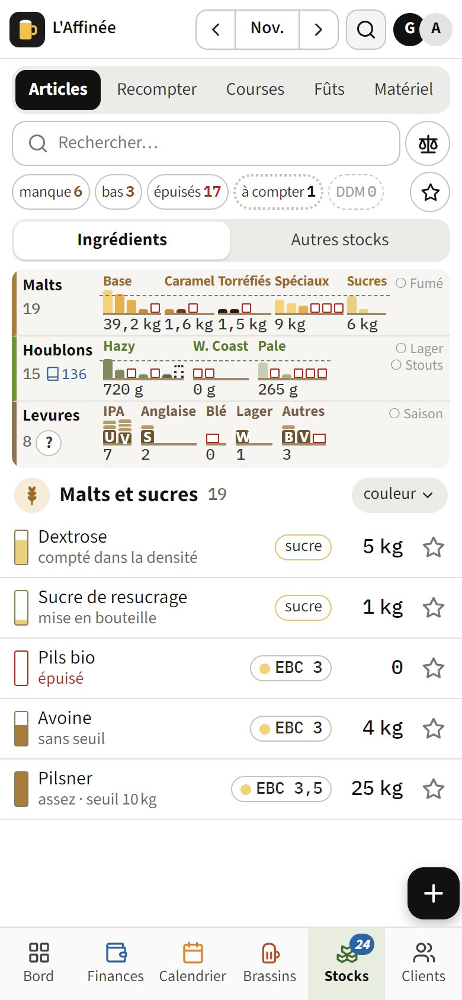
d7b écartée : une rangée de plus, en texte.
D8 · Matériel et Fûts
d8aMatériel : la liste du parc
« Parc 2 510 CHF + 1 ? ». Chaque pièce dit ses projets (2 projets, 1 projet, prix à saisir, aucun projet). Les pièces à venir sont dessous.
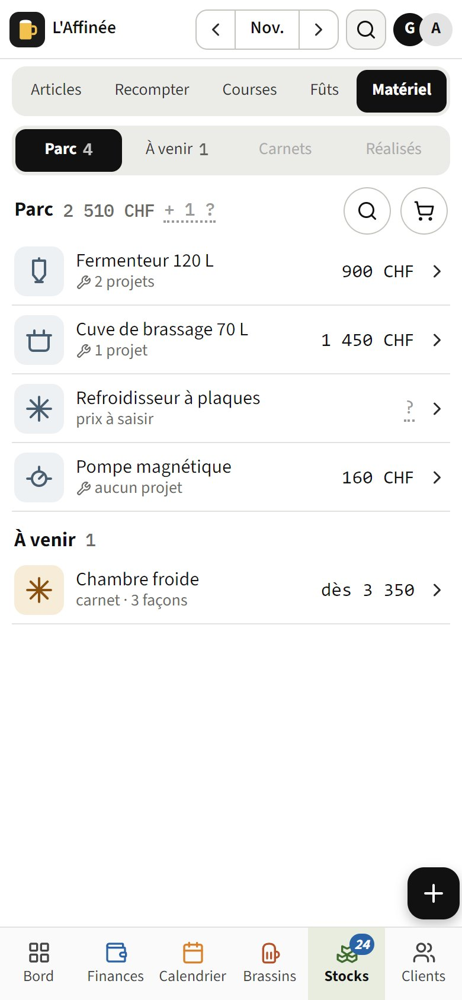
d8bFûts : l'étagère et les listes
Les fûts en étagère, K5 et K7 (30 L) plus grands. Dessous, une liste par état (Pleins, Livrés, À laver, Propres), chacune avec son action : Livrer, Retour, Lavé, Remplir.
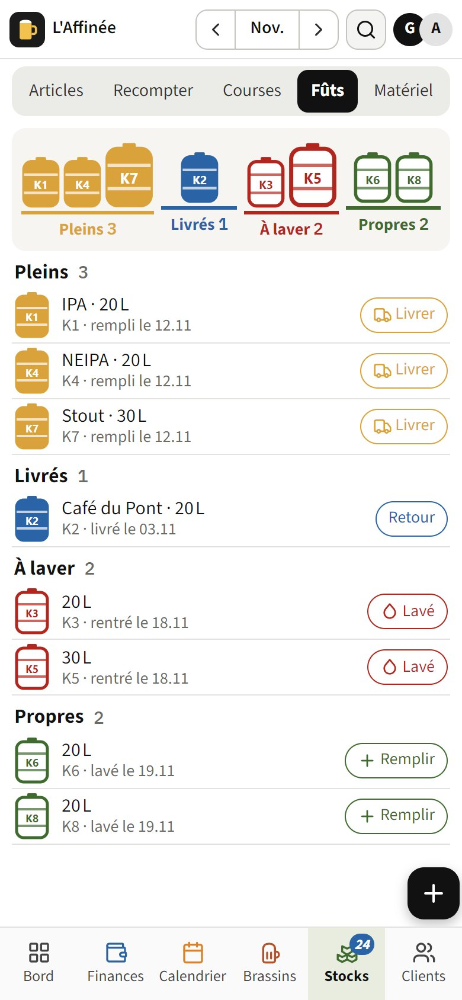
d8b Matériel écartée : moins d'information.
d8a Fûts écartée : la tuile Pleins ne colle pas à la liste.
Note générale
Le bouton + ne couvre plus les quantités. Il se cache quand tu défiles, comme dans l'app.